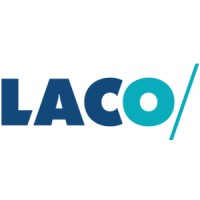

Data consultant
Mon expérience complète est disponible sur LinkedIn : LinkedIn – Julien Paulus
Data Analyst / BI Developer spécialisé en Power BI, modélisation de données, ETL cloud (Azure / Databricks), reporting orienté business et automatisation des pipelines.

Period : July 2018 - Present
Résumé : Création de dashboards interactifs, KPI business, ingestion et transformation de données, documentation, optimisation performance reporting.
Period : November 2024 - Dec 2025
Résumé : Création de dashboards interactifs, KPI business, ingestion et transformation de données, documentation, optimisation performance reporting.
Period : July 2022 - August 2024
Résumé : Création de dashboards interactifs, KPI business, ingestion et transformation de données, documentation, optimisation performance reporting.
Period : February 2019 - January 2022
Résumé : Création de dashboards interactifs, KPI business, ingestion et transformation de données, documentation, optimisation performance reporting.
Period : April 2017 - June 2018
Résumé : Création de dashboards interactifs, KPI business, ingestion et transformation de données, documentation, optimisation performance reporting.
Voir le profil LinkedIn pour les détails complets.
Bienvenue sur mon portfolio. Je suis Data Analyst / BI Developer spécialisé en Power BI, Azure, Databricks, SQL et la modélisation de données. Voici une sélection de mes dashboards et une section CV reprenant mon parcours professionnel.
Dashboard built on a star schema created from scratch using fictitious data.